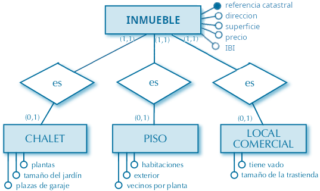
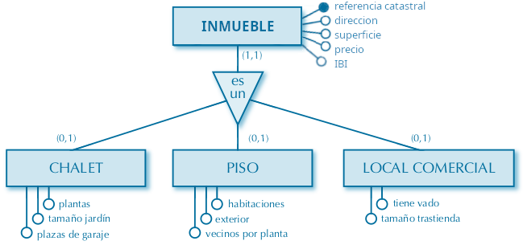
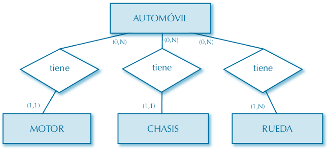
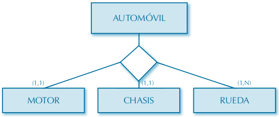
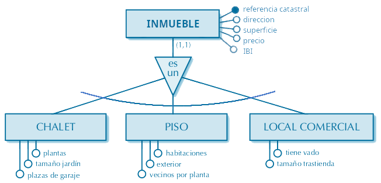

Diagrama ER extendido
En situaciones en que una entidad se está relacionando con muchas otras entidades, y bajo ciertas condiciones, se han definido un par de simplificaciones para el diagrama E-R.
Esos casos especiales de relación deben ser de uno de los siguientes tipos:
- Especialización: Una entidad más general puede descomponerse en subentidaes más específicas.
ejemplo: un "Empleado" puede ser un "Profesor", un "Bedel", un "Administrativo", "Técnico", "Directivo", ...:
todos comparten los atributos de la entidad "Empleado" y además tendrán sus atributos y relaciones propias.
- Agregación: Una entidad puede estar compuesta por muchas otras entidades de algún otro tipo.
ejemplo: un "Vehículo" puede poseer otra entidad que es el "Motor", las "Ruedas", el "Chasis", ...
Especialización: relación 'IS-A'
Decimos que entre dos entidades existe una relación de generalización/especialización cuando una de ellas es un caso particular de la otra.
A la entidad general se la denomina superclase, y a la particular o especializada subclase.
Por ejemplo, dentro de los bienes inmuebles podemos encontrar pisos, chalets, locales comerciales, oficinas, bodegas, estadios de fútbol, terrenos, ..., todos estos son casos particulares de una entidad genérica "inmueble":

Para simplificar estos casos, se define un nuevo tipo de relación entre entidades conocida como relación IS-A (es un):

Relación de agregación
Una relación de agregación es una asociación entre entidades, donde varias entidades simples se configuran juntas para crear una entidad más compleja.
Es decir, entre dos entidades existe una relación de agregación, cuando una de ellas forma parte de la otra.

Cuando varias entidades están agregadas en otra, para simplificar el diagrama E-R se utiliza un rombo vacio que representa una relación de agregación:

Exclusividad
Se produce exclusividad entre relaciones cuando la existencia de una relación implica la no existencia de las otras.
La exclusividad se representa con un arco que abarca las relaciones excluyentes.
Ejemplos
► Un inmueble sólo puede ser de un tipo de entidad: 
► En cierta competición, sólo pueden inscribirse equipos o personas individuales: Por ejemplo, en la vuelta a España se inscriben equipos, en el criterium de San Sebastian o el campeonato de España la participación es a título individual.